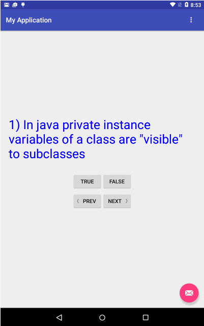
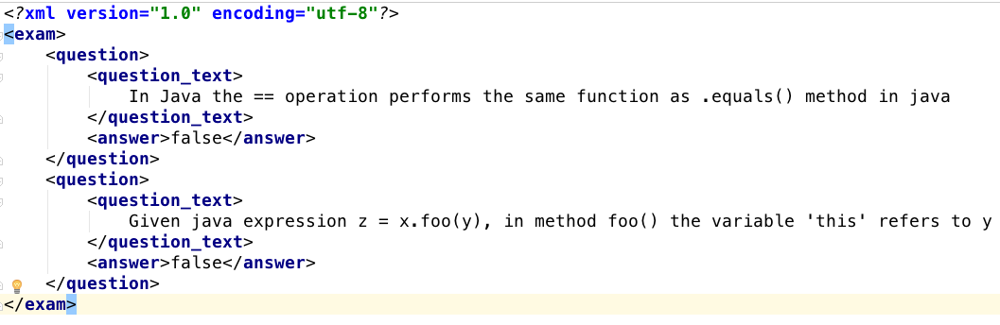
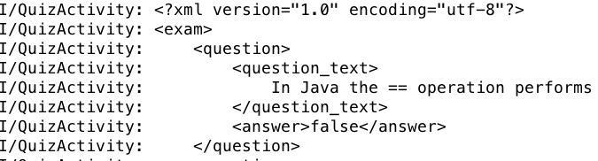

COMP 2601 Winter 2016
Ex 03 DIY XML Parser
© L.D. Nel 2016
Revisions -none yet
Description:
The purpose of this exercise is to review basic java programing by building your own XML parsing code to parse a datafile within an android application. We will look at how to read data files contained as raw resources in your android app.
You need to demonstrate your exercise to the TA or Prof. before you leave the class to get credit for it. Marks: 2 or completion, 1 for partial progress, 0 for no show or no progress. (A mark of 1 can be upgraded to 2 is show us your completed work within one week of this exercise.)
Instructions:
Background:
The two most common data formats for data exchanged between applications is XML and JSON. Here we work with XML. You are already getting familiar with XML since the android layout resources and manifest are XML files. Review the basics of XML at this W3 schools link before coming to the exercise.
Demo Code
Open and run the project in the demo_code folder. It creates an app that lets you answer true-false exam questions by pressing the "True" or "False" buttons. You can move from question to question by pressing the "Next" and "Previous" buttons. Each time you answer a question a toast pops up to tell you if you answered correctly or not. The application screen should look like this:

Observe also that currently if you rotate your device between landscape and protrait the application "forgets" which question it was on and goes back to the first question. (You will fix that as part of the exercise.)
Explore also the following in the demo code:
Problem 1)
Observe that among the xml resources in the project is a res/raw/comp2601exam.xml file. Open that file and it should look similar to the following:

For this problem we want you to be able to read the contents of this file and show each line on the logcat console window.
You can open the resource file and wrap it in a java InputStream as follows.
InputStream iStream = getResources().openRawResource(R.raw.comp2601exam);
You can read the file a line-at-a-time by wrapping the InputStream instance in a BufferedReader and looping through the lines as follows:
InputStream iStream = getResources().openRawResource(R.raw.comp2601exam);
BufferedReader bReader = new BufferedReader(new InputStreamReader(iStream));
String readLine = null; //input line read from file
try{
while((readLine = bReader.readLine()) != null){
Log.i(TAG, readLine);
}
bReader.close();
}
catch(IOException e) {
e.printStackTrace();
}
At this point you should be able to see the line's of the file on the logcat console:

Problem 2)
DIY XML Parser
Now comes the fun part. Using only simple java classes: String, ArrayList etc. write a parser to convert the XML file into an Arraylist<Question> of question objects. Important: we are writing our own parser, in a future class exercise we will use a dedicated java class that does XML parsing.
Basically we want you to replace the line of code in the onCreate() method:
questions = Exam.sampleExam1();
with this code instead:
InputStream iStream = getResources().openRawResource(R.raw.comp2601exam);
BufferedReader bReader = new BufferedReader(new InputStreamReader(iStream));
questions = Exam.parseFrom(bReader);
So for this to work you need to write the static Exam class method ArrayList<Question> parseFrom(BufferedReader).
Here is a strategy for how it might work (but you are free to do whatever you want):
Loop though the file and whenever a line starts with an opening XML tag, you know you are starting data collection for a new item. Whenever a line contains a closing XML tag you know the data you have been collecting is complete. Use java String methods to determine whether, for example, a line starts with a particular XML tag or not, or to extract data between tags.
The Exam and Question class already contain definitions of the XML tags that pertain to them.
The data file we are using is very "friendly" XML: tags either appear on their own line, or a line starts and ends with tags with data in between. Also there are no attributes in the XML tags nor any self-closing tags. Hence reading a file a line at a time should work fine.
One suggestion is to have variables that represent the current tag you are working on and the current text data collected so far for the tag. When you see the closing tag you know you have finished collecting the data.
In the end your method should return an ArrayList<Question> parsed from the XML file.
Modify the code as needed so that the app uses the parsed data rather than the sample set of questions supplied by the Exam class.
Problem 3)
Finally, you will notice that when you rotate the test device between landscape and portrait mode the application "forgets" which question it was on and displays the first question.
Fix this using the savedInstanceState Bundle accessible via the activity life cycle methods. Specifically overwrite the onSaveInstanceState(Bundle savedInstanceState) method and have it save the current question index in the savedInstanceState. (You should probably do the same for the onRestoreInstanceState() method but I won't make a difference here.)
Then, modify the onCreate(Bundle savedInstanceState) method to recover the question index.
If necessary, review the lifecycle for android activities as described in last week's class exercise 02.
When you have completed these problems demonstrate your code to the TA or Prof. to get credit for the tutorial.